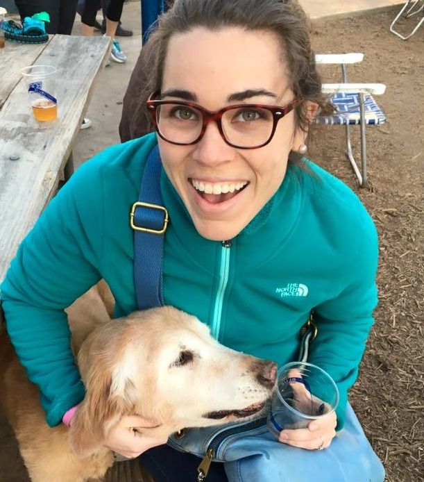

Lindsey Fischer
Web Developer | Breakfast Taco Enthusiast | Triathlete
computerfavorite_border
directions_bike

I'm a full stack web developer living in Round Rock, Texas with my husband and three cats. JavaScript, Node.js, SQL, HTML5, CSS, and Materialize are my 'bread and butter'.
I love being challenged and solving problems. I learn best by doing and I'm always looking for opportunties and resources to expand my skillset.
When I'm not building new projects or reading up on the latest technologies, I am running/biking/swimming, cooking, eating, or visiting new places in Austin.